Welcome to the material design page! This page shows a few examples of works that I have created using physical materials.
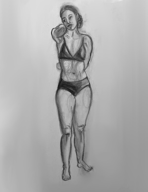
Female Figure live Charoal Drawing
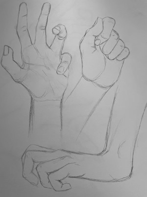
Graphite Drawing of Hands
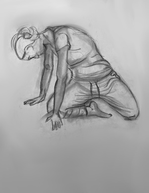
Female Figure live Charoal Drawing
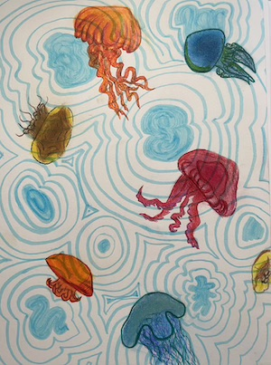
Jellyfish with Mixed Media
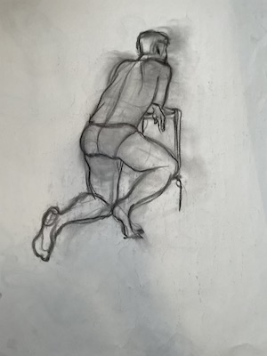
Male Figure live Charoal Drawing
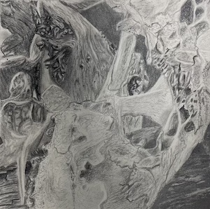
Bones and Wood Texture Drawing
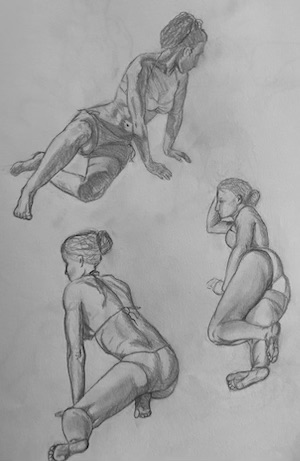
Photo Referenced Graphite Figures
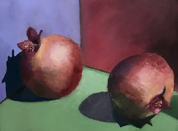
Pomegranate oil Painting
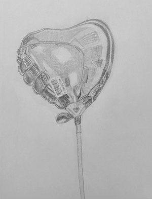
Balloon Graphite Drawing
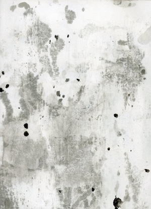
Abstract With Mixed Media
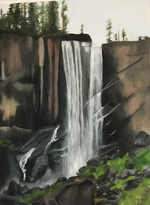
Waterfall oil Painting
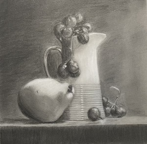
Still Life with Pear and Grapes
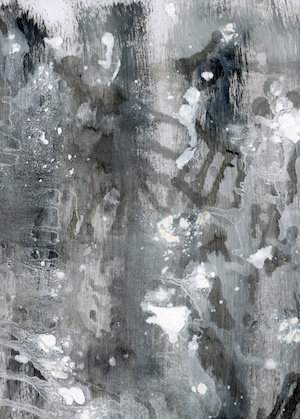
Abstract With Mixed Media
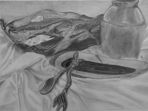
Graphite Still Life with Utensils
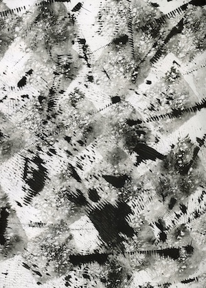
Abstract With Mixed Media
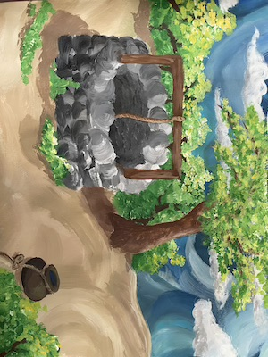
Well Acrylic Painting
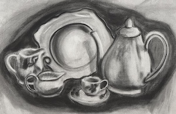
Charcoal Still Life with Teapot
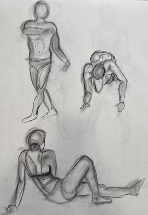
Three Figures Live Charcoal Drawing
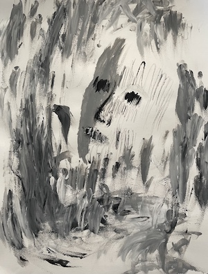
Abstract Face Acrylic Painting
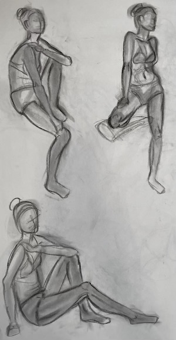
Three Figures Live Charcoal Drawing
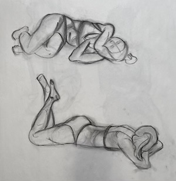
Two Figures Live Charcoal Drawing
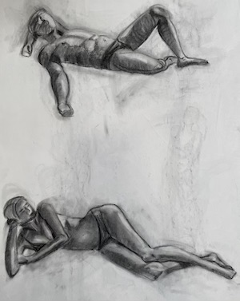
Two Figures Live Charcoal Drawing